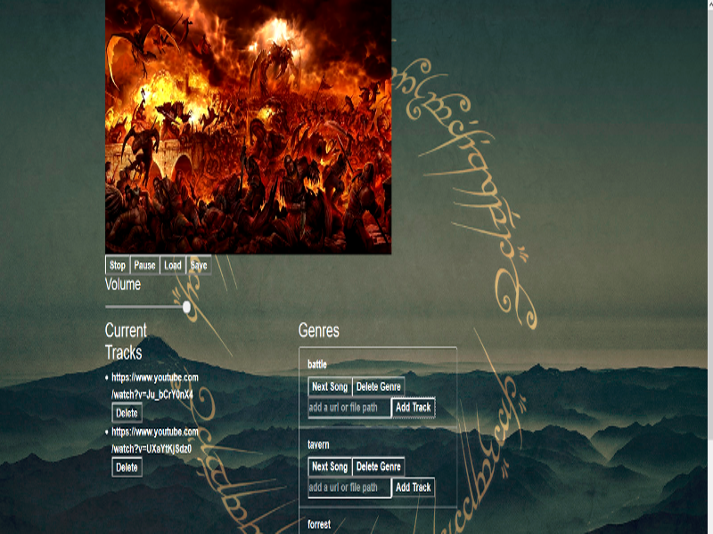

Hi I’m Justin Unverricht, full stack and VR developer extraordinaire. I really enjoy programing in JavaScript and Python and can be convinced to develop in PHP when I have to! I have a wide variety of experience designing, developing and testing both mobile and web based applications. Past projects include:
Leading the usability and QA testing for an interactive television iOS app for WinView Inc.
Developing the early front end for the San Francisco based baked goods startup Doughbies.
Developing the CMS and front end for the mobile tourism app developed by Artirigo AG which clients include the German Ministry of Finance and the Chamber of Commerce in Bamberg, Germany.
Maintaining the immersive Hebrew language site and developing educational software for the UC Berkeley Middle Eastern department.
I also enjoy working in the Unity3D engine, creating virtual environments and developing game AI and prototypes. My Unity projects include:
PCG maze and level generation
AI pathfinding and player interaction
Procedural noise creation
Virtual Reality managed walking
I am also an award winning craft beer homebrewer and was president of the largest home brew club in the bay area, the Bay Area Mashers. It is an awesome group of people and a great place to not only learn how to make and critique great beer but network with some awesome people in the industry as well.

PCG Maze
Yoshi Cubes
Next Beer
NLP
React Player
An extension for the popular React-Player by Pete Cook, that allows for users to create track lists and gather urls for videos and music from across the web in one convenient place. This is currently a work in progress and future additions include the ability to save and load track lists and providing your own local movie and sound files to be played as well. You can check it out below Click Here